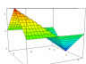

| DPGraph Math Art Gallery Page 11 |
| Home | Buy | Free Viewer | Legacy Site Licensees Latest news: 12 Nov 2017 | Update to newest version: 19 Dec 2016 Math Art Gallery | Documentation | Links | Privacy | Contact |
More pages of beautiful math art thumbnails:
Newest
13
12
11
10
9
8
7
6
5
4
3
2
Oldest
DPG files: Alphabetically by contributor | Alphabetically by title of graph
|  "K-dron" by Bronek Pabich. |
"Mobius Strip" by Jim Swift. More ... |
"Octahedron" by Jim Swift. More ... |
"Donut Toy" by Jim Swift. For an explanation of how to create this graph, visit Jim Swift's Donut Toy page. |
"Gim 16 Krakow II" (movie) by Anna Leśniak. The name of her school in a slightly different font. |
"Tetrahedron" by Bronek Pabich. |
"Car Walk" (movie) by Brent Solly. Two hyperbolic paraboloids create an overpass for people and a tunnel for cars. |
"Cycloid" (movie) by Jim Swift. Use DPGraph's Scrollbar to vary A (radius to dot) and B (speed of wheel). For more, visit Jim Swift's Cycloid page. |
"Nonconvex Octahedron" (movie) by Bronek Pabich. Showing how eight planes form a nonconvex octahedron. |
"Stellated Octahedron" (movie) by Bronek Pabich. Showing how eight triangles form a stellated octahedron. |
"Gim 16 Krakow" (movie) by Anna Leśniak. Click on Edit inside DPGraph to see how she wrote the name of her school mathematically. |
"Six Spheres Stretch" (movie) by Joe Seale. Use DPGraph's Scrollbar to vary A or B. Click on Edit inside DPGraph for more info. |
"Pseudo I-WP" by Alan Schoen. An approximation to a unit cell of Schoen's I-WP surface. Click on Edit inside DPGraph for extensive comments. More ... |
"Pseudo D" by Alan Schoen. An approximation to a unit cell of Schwarz's D surface. See the comments inside "Pseudo I-WP". More ... |
"Soap Film (It Pops)" (movie) by Jim Swift. Use DPGraph's Scrollbar to vary A (the speed at which the circles separate). Click on Edit inside DPGraph for info. More ... |
"Spherical Harmonic Y3,1" by Jim Swift. For an explanation and many examples, visit Jim Swift's page on Spherical Harmonics. |
"Six Spheres Pulsate" (movie) by Joe Seale. Use DPGraph's Scrollbar to vary A, B, or C. Click on Edit inside DPGraph for more info. |
"Six Spheres Pulsate Colors" (movie) by Joe Seale. Use DPGraph's Scrollbar to vary A, B, C, or D. Click on Edit inside DPGraph for more info. |